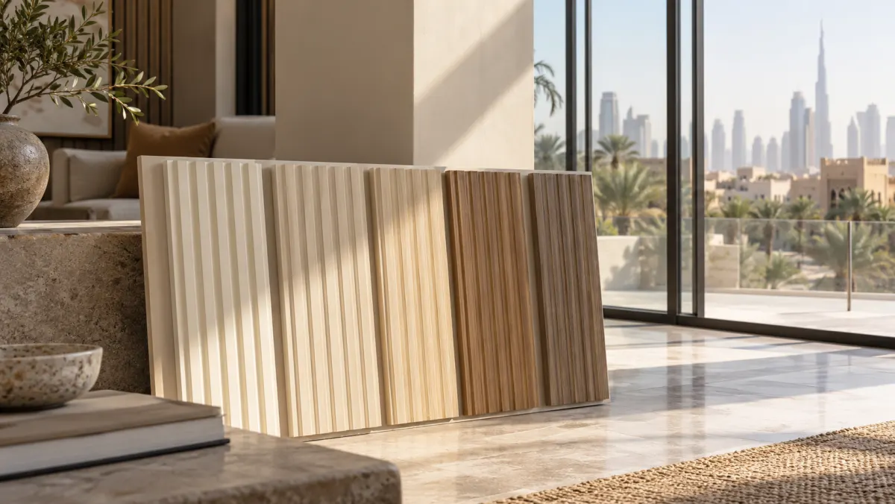

PVC Wall Panels in Direct Sun: A Hot-Climate Buyer Checklist
A wall behind large glazing can receive intense sun even when it is technically indoors. Buyers in the Gulf and other hot markets therefore ask a practical question: “Can this decorative PVC wall panel be used in direct sunlight?” The honest answer depends on the exact panel face, construction, intended-use statement, installation detail and evidence—not on the word “PVC” alone.

Do not treat an indoor decorative panel as an exterior or sun-rated product without written manufacturer approval for the exact SKU. Record whether the proposed wall is shaded, behind glazing, or directly exposed outdoors; then request relevant weathering and dimensional-stability evidence plus installation limits.
First separate three different exposures
A shaded interior wall, an interior wall beside west-facing glazing and an exterior facade are not the same application. Glass can change the light spectrum but may also create substantial surface heating. Outdoors adds rain, wind, freeze-thaw in some markets and more demanding fixing and fire requirements. Write the intended location into the inquiry before asking for a sample; otherwise a seller may quote an attractive indoor finish for the wrong use.
If the design changes after sampling, repeat the suitability check. A sample approved under showroom lighting does not become evidence for a sun-exposed lobby, balcony or building envelope.
What a UV test can and cannot prove
ASTM G154 describes operating fluorescent UV-lamp apparatus for exposure of materials. It is a test practice, not an automatic “UV-proof” certificate or a service-life guarantee. Ask which specific specimen was tested, the exposure cycle, duration, measured color or surface change, and whether it matches the face film and formulation being ordered.
Compare two test reports only when their conditions and assessment methods are comparable. If a sales sheet says “UV resistant” but shows no test specimen, method or result, treat the claim as unverified. An approved physical sample kept out of light can serve as a useful color reference for later comparison, but it does not replace laboratory evidence.
Plan thermal movement and installation limits
Temperature changes can affect the dimensions of plastic components. Obtain the manufacturer’s instructions for expansion allowance, fixing, maximum panel length and permitted substrate. Review dark finishes particularly carefully because visual and thermal behavior can differ from pale samples. Do not invent a universal movement-gap number; the system details depend on product construction and installation method.
For a large feature wall, confirm how joints, corners, window returns and trims will accommodate movement. Ask the installer to build a mock-up at the actual site, where midday light and evening cooling may expose issues that a desk sample cannot.
Choose a product range for the actual exposure
If the design is outdoors, start with an exterior-intended system and check its full profile, substructure, fasteners, weathering and local code path. Our indoor-versus-outdoor WPC guide explains why a similar appearance does not make two systems interchangeable. For an indoor decorative wall, the PVC product page and wall-panel catalog (PDF) can help shortlist finishes, followed by a written suitability question about the exact SKU.
Do not quote a catalog image as evidence of exterior suitability. Keep the approved use case on the quotation and sample label so a distributor does not accidentally market an indoor finish as facade cladding.
Questions to send the supplier
- Is this exact SKU approved for indoor shade, interior direct sun, or outdoor exposure?
- Which face film and color were used in any reported weathering test?
- What were the test method, cycle, duration and measured result?
- What temperature and movement limits appear in the installation instructions?
- How will the selected trims and fixings accommodate long runs?
- Can the supplier provide a mock-up sample and an approved color reference?
Common buyer questions
Does “UV resistant” mean no fading?
No. Ask for the exact test result, conditions and acceptance criteria. A broad marketing phrase is not a lifetime guarantee.
Can I use an indoor PVC panel on an outdoor balcony?
Only if the manufacturer approves that exact product and the complete installation system for the exposure and local requirements. Otherwise select an exterior-intended system.
Should I test samples in the actual building?
Yes. A small mock-up in the real light helps assess color, gloss, joints and visual change, although it does not replace formal performance evidence.
Describe the exposure, not just the color.
Send the room, glazing direction, expected sun exposure and target finish to request a more relevant Luvie sample discussion.
Discuss the application